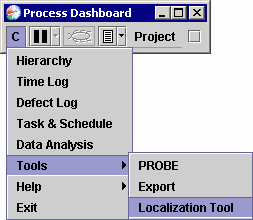
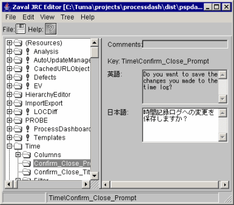

Localization Tool" from the
configuration menu.
Localization Tool" from the
configuration menu.The dashboard has many users around the world. To better support
all our users, we are currently working to internationalize the
dashboard. The Process Dashboard includes a Localization Tool that
you can use to translate dashboard messages into your own language.
You can open the Localization Tool by selecting "Tools Localization Tool" from the
configuration menu.

(Note that the menu option for the localization tool will not normally appear for English-speaking users.) The Localization Tool is based upon the useful Zaval JRC Editor written by Victor Krapivin and others (http://www.zaval.org/products/jrc-editor/).
The localization tool arranges translation keys hierarchically and displays the resulting tree on the left. Exclamation points indicate keys that still need to be translated. When you select a key in this tree, the right hand side of the screen displays the English message and a place for translation into your native language.

Some translation keys end with the string "_FMT". The English message associated with these keys will contain expressions like "{0}". These translation items are Java MessageFormat strings; at runtime, the "{0}" will be replaced with a dynamically generated value. To translate these items correctly, you will need to understand the syntax of MessageFormat strings. For more information on MessageFormat syntax, visit http://java.sun.com/j2se/1.4.1/docs/api/java/text/MessageFormat.html
Other translations may contain cross-references. A cross-reference is a translation key surrounded by curly braces, with a '$' sign in front; an example would be ${some.other.key}. When the dashboard sees a cross-reference, it looks up the translation described by the named key, and replaces the reference with that translation.
Cross-references are designed to reduce the burden of translating the dashboard, without sacrificing expressiveness. For example, the English word "Plan" may be used in two different places inside the dashboard, but it may have different meanings (for example, in English the word "Plan" might be used as a noun, a verb, or an adjective). In another language, different words might be needed to capture these different meanings. Thus, the dashboard might define the following translation keys:
Plan=Plan
Plan_Noun=${Plan}
Plan_Verb=${Plan}
Plan_Adjective=${Plan}
This approach has two benefits. If your language, like English,
reuses the same word in all these situations, then you will only need
to translate the "Plan" key, and the other three keys will follow
along automatically. If, however, your language requires different
words for one or more of these situations, you can edit the other keys,
deleting the cross-reference entirely and entering your translation
instead.
After you enter translations, click on the Save icon. Your new translations will take effect the next time you restart the process dashboard.
The localizations you enter will be saved automatically into a file with a name like "pspdash_*.jar". You can locate this file by visiting http://localhost:2468/control/showenv.class. This file is formatted as a Process Dashboard Add-on, and can be easily shared with other dashboard users. Give them a copy of the file and instruct them to save it into the directory where they installed the Process Dashboard, and they can benefit from your translations as well.
If you choose to use the Localization Tool, please consider sharing your translations with the Process Dashboard development team. This will allow users around the world to benefit from your translation efforts. The Localization Tool can share your translations automatically if you give your consent. (Note that automatic sharing will not work if you have to use an HTTP proxy server to connect to the internet. No error message will be displayed in this case. If you would like to share translations, but you are behind an HTTP proxy server, please send email to processdash-devel@lists.sourceforge.net for further instructions.)